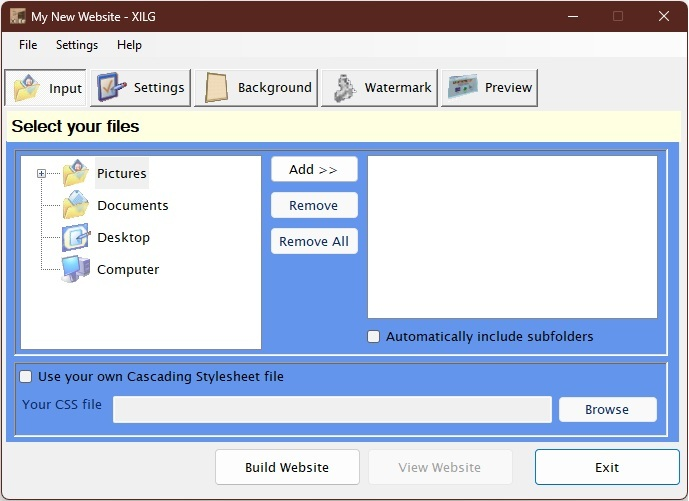
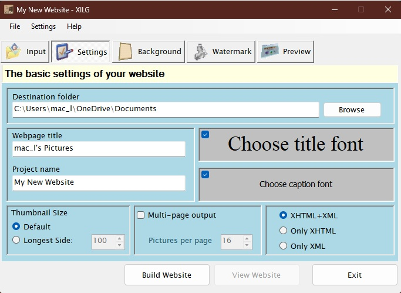
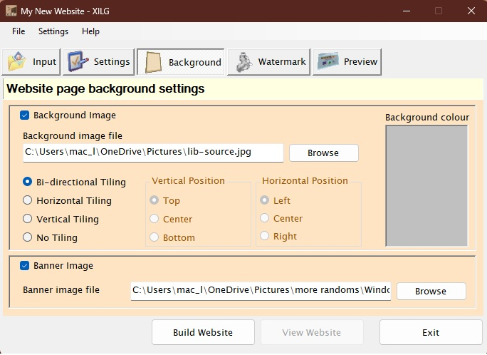
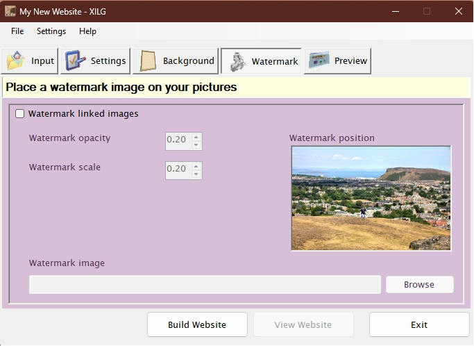
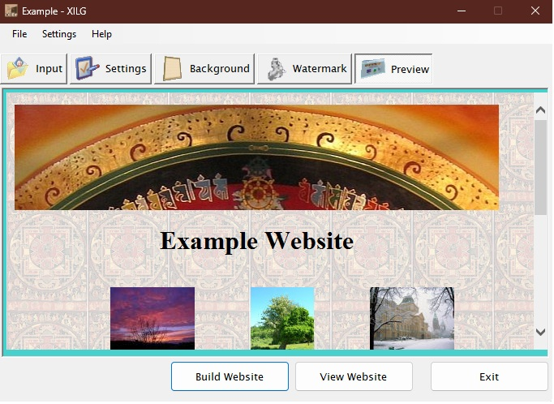
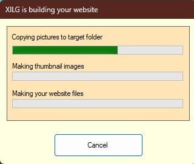
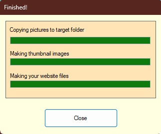
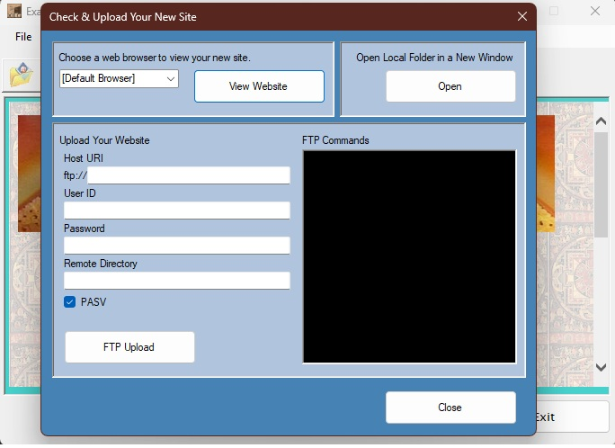
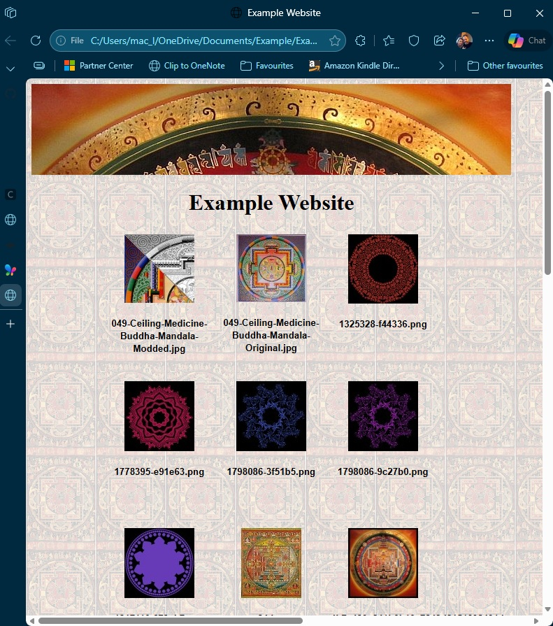

The XILG program is intended to automate the process of building simple thumbnail web pages. It has a very simple and (I hope) self explanatory user interface.





You are now ready to press the "Build Website" button.
On pressing the button, the program will now:

destination-folder\project-titledestination-folder\project-title\originalsdestination-folder\project-title\thumbnails
destination-folder\project-title project-title.cssproject-title.xslproject-title.xml from
the image files it finds in the folder given in the top edit box. The
program recognises the following image types, by file extension: project-title.htmlin the folder
destination-folder\project-titledestination-folder\project-title\images
- optionally watermarking each image, in the process
destination-folder\project-title\thumbnails


The "View Website" button will load the new
project-title.html into your default
Web Browser for viewing. If you wish, you can select any other browser you
have installed, using the dropdown menu.

The "Open button will open the project folder in Windows Explorer, so you can examine the files that have been generated and copy them to your web server as necessary.
You can use the "FTP Upload" button to upload the generated files using the built-in ftp client. You will need to have an ftp server to upload to, and know the hostname, username and password for your account on that server. You can also specify a remote directory to upload to, if you don't want the files to go into the root of your account.
The project-title.html uses
the XHTML 1.1 standard, which should be accepted by
all current browsers, since the first version was specified
in 2001, updated in 2010 and the latest is from 2018.
The project-title.xml file may be
viewed directly in an XSLT supporting browser. That's none currently,
unless correctly served up by a web server. Use your favourite text editor.
This program is free. The source code is available on
GitHub.
The original was built using the June 2002 Platform SDK from Microsoft
and Visual C++ 6.0 Professional (Service Pack 5).
This version was built using Visual Studio 2022 Community Edition.
It should compile and run on any Windows machine with the .NET
Framework 4.0 or later installed, but I have only tested it on Windows 11.
It may run on older versions of Windows, but I have not tested it on those.
It will not run on non-Windows operating systems, since it uses
Windows-specific APIs and features.
Graeme P. Bell
Copyright© 2005-2026 Graeme P. Bell. All rights reserved.